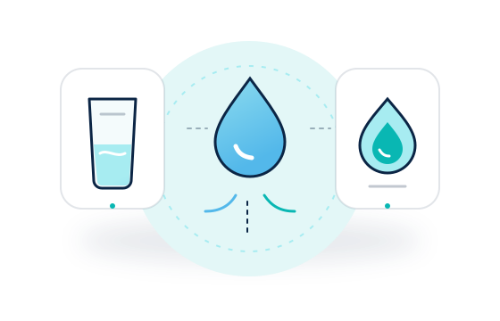

Água potável
Da torneira ou engarrafada, conforme a disponibilidade e a segurança local.
Guia rápido de hidratação
A água faz parte de funções normais do organismo. A quantidade de líquidos varia entre pessoas e situações — por isso, uma referência populacional não define sozinha o que é adequado para você.
Entenda em 2 minutos01 · Primeiro, o conceito
Em referências nutricionais, a água total pode incluir a água potável, outras bebidas e a umidade presente nos alimentos. Isso é diferente de dizer que todo o volume estimado deve ser bebido em copos de água.

Da torneira ou engarrafada, conforme a disponibilidade e a segurança local.
Também contribuem com líquidos; composição e valor nutricional variam.
Frutas, vegetais e outros alimentos contêm quantidades diferentes de água.
A calculadora J-WATER apresenta uma aproximação de ingestão total de alimentos e bebidas. A equivalência em copos é apenas aritmética, não uma instrução para beber aquele volume como água pura.
02 · O contexto muda
Não existe um único fator que explique tudo. Situação, rotina e saúde fazem diferença — e um cálculo simples não consegue observar todas elas.
Esforço, duração e suor podem alterar as perdas de líquidos. O modelo do J-WATER não calcula uma sessão específica de exercício.
Calor e exposição ambiental podem aumentar a necessidade de atenção aos líquidos. Temperatura, umidade e altitude informadas na calculadora apenas contextualizam o modelo.
Idade, atividade, gravidez e amamentação estão entre os fatores associados a diferenças de ingestão em orientações populacionais.
03 · Mitos e contexto
Abra cada tópico para ver uma resposta curta e suas limitações.
Oito copos não é uma regra individual que sirva para todas as pessoas e contextos. As necessidades variam, e valores de referência populacionais devem ser interpretados como referências, não como metas clínicas pessoais.
Não. O resultado é uma estimativa exploratória de água total proveniente de alimentos e bebidas. Ele não determina quanto você deve beber, não mede seu estado de hidratação e não é prescrição médica.
Não é seguro transformar isso em regra. Em exercício prolongado, a ingestão excessiva de água pode contribuir para uma emergência relacionada à baixa concentração de sódio no sangue. A calculadora não orienta reposição durante treino.
04 · Ideias simples para o dia a dia
Se quiser beber água com mais regularidade, pequenas adaptações práticas podem ajudar. Não são metas universais nem substituem orientação individual.
Um cuidado importante
Doenças renais ou cardíacas, medicamentos, gravidez, amamentação ou uma recomendação de limitar líquidos podem exigir acompanhamento específico. O J-WATER não aplica ajustes para essas situações. Siga as orientações da sua equipe de saúde; não use esta estimativa para mudar um plano clínico.
Pessoas com doença renal crônica podem precisar limitar líquidos, conforme orientação profissional. NIDDK: alimentação e doença renal crônica (em inglês).
Curiosidade com contexto
Conheça os fatores usados, as condições assumidas e as limitações antes de interpretar o resultado.
Ver a calculadora